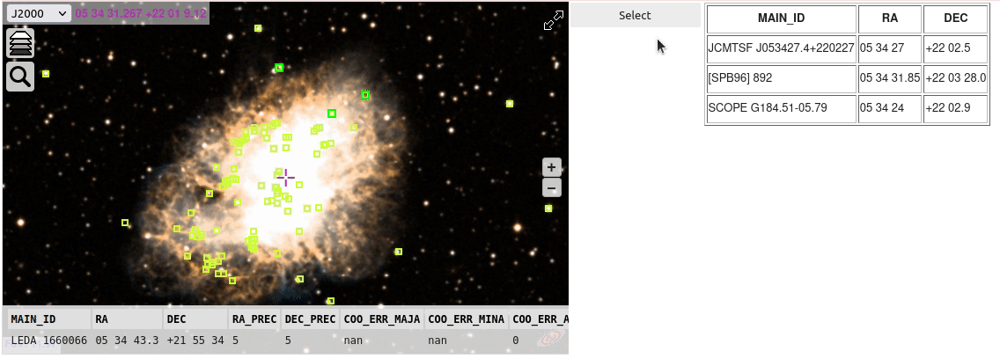

Example of interactive rectangular selection#
Once all the cells below have been executed, you will be able to press the Select button, drag a rectangle enclosing the sources you wish to select and see their names in the table at the right of the ipyaladin view.

[1]:
from ipyaladin import Aladin
from ipywidgets import Layout, Box, widgets
from astroquery.simbad import Simbad
import astropy.units as u
aladin = Aladin(
layout=Layout(width="50%"),
target="M 1",
fov=0.2,
show_projection_control=False,
show_fullscreen_control=False,
)
button = widgets.Button(description="Select")
def on_button_clicked(_: any) -> None:
"""Button click event callback.
It will trigger the rectangular selection in the Aladin widget.
Parameters
----------
_: any
The button widget that triggered the event.
"""
aladin.selection("rectangle")
button.on_click(on_button_clicked)
table_info = widgets.HTML(layout=Layout(height="auto", overflow="auto"))
box_layout = Layout(
display="flex",
flex_flow="row",
align_items="stretch",
width="100%",
position="relative",
)
box = Box(children=[aladin, button, table_info], layout=box_layout)
box
[1]:
[2]:
table = Simbad.query_region("M 1", radius=0.1 * u.deg)
aladin.add_table(table)
def process_result(sources: dict) -> None:
"""Process the sources selected in the Aladin widget and display them in the table.
Parameters
----------
sources: dict
The sources selected in the Aladin widget.
"""
s = '<table border="1">'
s += "<tr><th>MAIN_ID</th><th>RA</th><th>DEC</th></tr>"
for source in sources:
s += "<tr><td>%s</td><td>%s</td><td>%s</td></tr>" % (
source["data"]["MAIN_ID"],
source["data"]["RA"],
source["data"]["DEC"],
)
s += "</table>"
table_info.value = s
aladin.set_listener("select", process_result)